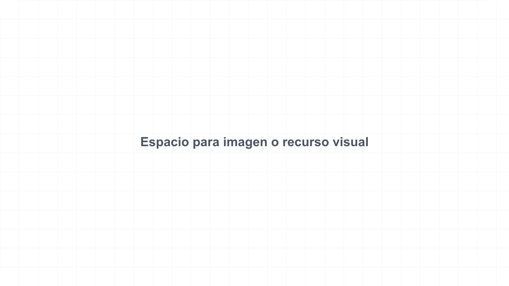

Fundamentos de interpretacion biblica
Secuencia de clase creada para probar portada, ritmo educativo y uso de assets reales.
Leer el texto antes de explicar el texto
La clase introduce una practica simple: observar, preguntar y aplicar sin saltar directamente a conclusiones.
Practica guiada
Los estudiantes comparan contexto, audiencia y genero literario antes de redactar una sintesis.
La interpretacion empieza con atencion
La claridad no nace de decir mas, sino de mirar mejor lo que el texto ya presenta.
Cuatro pasos sostienen la practica
Observar
Identificar repeticiones, contrastes y estructura.
Preguntar
Separar dudas reales de suposiciones rapidas.
Interpretar
Conectar contexto, genero y argumento.
Aplicar
Responder con una accion concreta.
Reservar el espacio tambien comunica prioridad
Cuando falta una captura, grafico o imagen de apoyo, se usa un placeholder real y honesto.

La rubrica distingue lectura, evidencia y aplicacion
| Criterio | Evidencia esperada | Estado |
|---|---|---|
| Observacion | Rasgos visibles del pasaje | Completo |
| Contexto | Autor, audiencia y situacion | En progreso |
| Aplicacion | Respuesta concreta y verificable | Pendiente |
momentos bastan para estructurar la lectura
Dato pedagogico del ejemplo; reemplazar por metrica real o marcar como pendiente.
Slide de cita o pregunta grande con contraste oscuro.
Practica con el pasaje asignado
Proximo paso: preparar una observacion breve y una pregunta honesta para discusion.